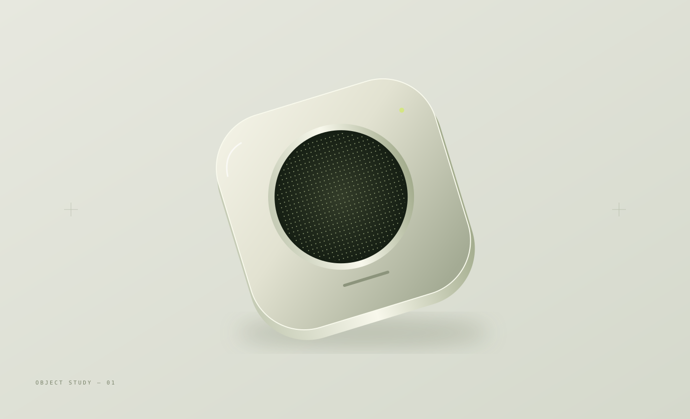
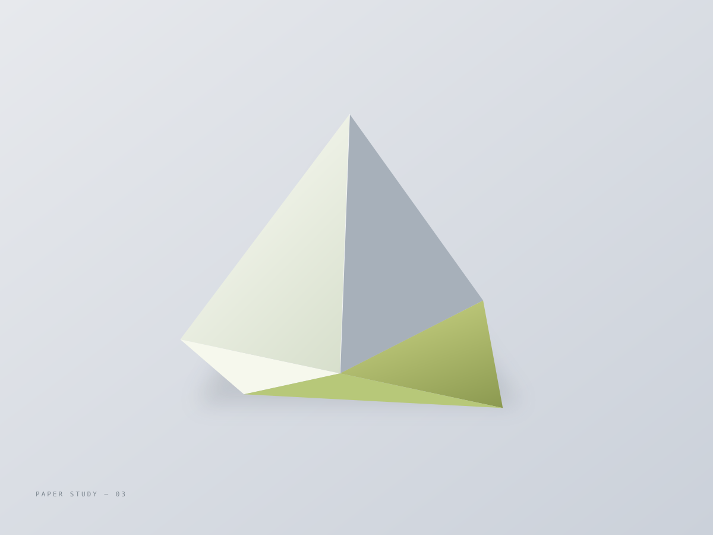

Hello, I'm Wenjia.
A designer,
with a curious mind.
This is my space for design and research.
A place to share selected work, explore ideas,
and collect the things that catch my attention.


Hello, I'm Wenjia.
This is my space for design and research.
A place to share selected work, explore ideas,
and collect the things that catch my attention.


Follow a thread. Stay a little.
Drag to explore · Select to look closer.
A place for design,
research and curiosity.
Personal introduction and contact details
will take shape here.